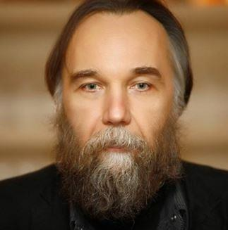
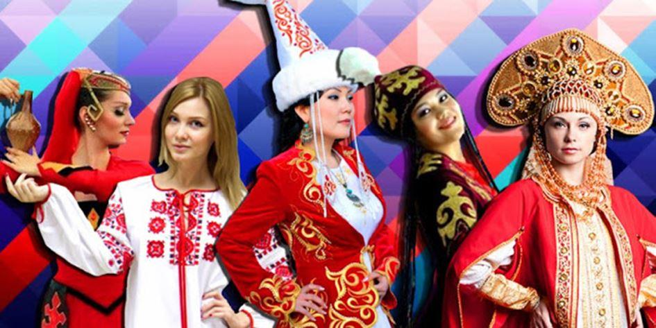
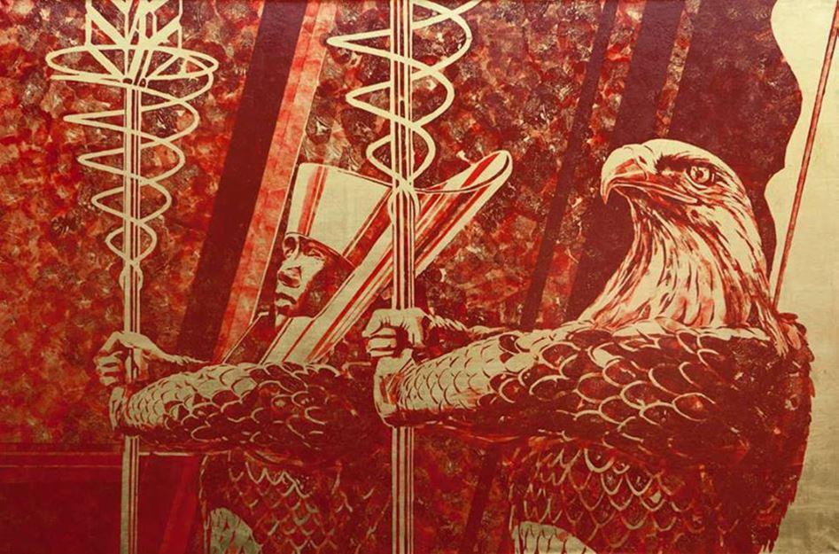
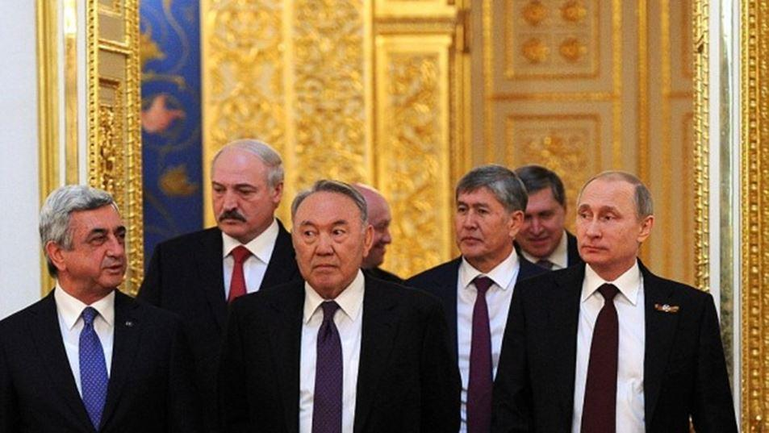

Chez de nombreux nationalistes et dissidents des nations occidentales, qui comprennent toutefois l’importance de prolonger leur idéal en direction du redressement spirituel et politique de la civilisation européenne, le néo-eurasisme est perçu de plus en plus, nous semble-t-il, comme une doctrine politique, géopolitique, et même métapolitique, intéressant exclusivement la Russie.
Nous pensons que cette aperception des choses est issue d’une interprétation de cette nouvelle théorie politique qui émane principalement de deux éléments, historique et conjoncturel : d’une part le fait que l’eurasisme soit à son origine, c’est-à-dire au début du XXième siècle, l’aboutissement du travail intellectuel de penseurs russes, certains émigrés en Europe (Mendeleev, Troubetskoï, Florovsky, Alexeïev, etc.) et, d’autre part, que la majorité des militants européens actuels ne saisissent pas toujours clairement la nécessité, simultanément à leur combat (consistant à stimuler et à affirmer la singularité d’une civilisation à partir de ce qui subsiste de ses fondements culturels), de participer à l’élaboration d’une nouvelle théorie politique universelle propre à proposer de façon adéquatement différenciée à chaque civilisation un devenir qui s’ « abreuve » de la Tradition et qui s’oriente par rapport à la Centralité atemporelle de Celle-ci (cet enjeu hautain se situe donc au niveau supérieur de la doctrine, et au-delà, au niveau d’une vision spirituelle universelle du monde, avant même de pouvoir se situer au niveau inférieur, quoique essentiel, de son adaptation à une civilisation en particulier afin de lui restituer un Centre immatériel inspiré par cette vision supérieur du monde, bref, un Imperium).
Le premier élément, historique, ci-dessus mentionné pourrait sembler surmonté par l’effet du temps, mais en apparence seulement, surtout chez certains nationalistes nostalgiques de l’Europe de l’Est principalement, puisqu’il joue encore, du fait de son origine russe, un rôle répulsif tant il est que l’eurasisme représente pour eux un idéal oriental, asiatique, donc strictement étranger à la culture européenne originelle, et qui plus est, amalgamé au passé bolchévique. Il est exact que l’eurasisme initial s’appuyait grandement sur un « fusionisme » slavo-turco-musulman en phase avec la vision d’une destinée impériale singulière multi-ethnique et multinationale de la Russie intégrant ses aspects européen et turco-mongol. Il était effectivement l’aboutissement doctrinal d’une volonté, dans l’esprit de ces penseurs russes exilés, consistant à redonner des perspectives véritablement impériales à la Russie, c’est-à-dire d’en faire le siège du Centre politique et spirituel d’une civilisation singulière, suite aux enseignements qu’ils ont pu tirer de la révolution bolchevique.
Mais le but ici n’est pas d’analyser, même brièvement, cet eurasisme originel car nous pensons pour notre part que le néo-eurasisme, que nous participerons ici à faire mieux appréhender sous le vocable d’« eurasisme », tout simplement, a su dépasser, grâce aux travaux et aux relations internationales soutenus par Alexandre Douguine, l’espace auquel il s’était donné pour tâche sacrée à l’époque de redonner une Vie spirituellement ordonnée.
Le second point, que nous avons qualifiés de conjoncturel, pourrait être lié au fait que la Russie s’affirme de plus en plus comme un acteur majeur du jeu géopolitique mondial actuel. Partant, ce qui est perçu de façon croissante comme une nation, mais aussi comme une civilisation qui, à part entière, non seulement affirme sa singularité mais, dans le même temps, est victime d’un ostracisme de la part du cartel des pays occidentaux, se voit bénéficier, et ce d’un point de vue qui peine à comprendre la nécessité actuelle d’une nouvelle démarche spirituel et politique vers l’universel, d’une théorie politique indigène qui donc serait adaptée à son paradigme culturel, géographique et historique, voire ethnique (ce qui en soit est un non sens puisque l’Eurasie est d’essence impériale et multi-ethnique), : l’eurasisme. Celle-ci, comme il serait effectivement exact de le dire, prend directement en compte les situations géographique et géopolitique russes au sein du Grand Continent Eurasien et la réalité socio-culturelle les peuples divers qui composent l’imperium russo-eurasien aujourd’hui en phase d’affirmation hésitante et incertaine. Cette nouvelle théorie politique, et spirituelle (ce qu’elle se doit d’être en tout premier lieu – mais nous y reviendrons), est centrée (et ce terme est d’importance à cet égard) sur la Réalité et l’aspiration profonde de cet imperium eurasien. Il est bien entendu que cette aspiration de motivation spirituelle et cette Réalité ne correspondent pas précisément à celles de l’Europe (et ce d’autant plus au regard de la phase dégénérescente actuelle de celle-ci). D’autant plus que l’Histoire et les influences spirituelles orientales ont fait de la civilisation russo-eurasienne, centrée sur la domination impériale russe, une entité détachée de la destinée du reste du sous-continent européen qui s’est laissé peu à peu engloutir sous les eaux infernales de l’occidentalisme. Il nous paraît ici important d’appuyer sur le fait que le développement historique et culturel de cette civilisation d’inspiration tout autant occidentale qu’orientale s’est accompagné d’une affirmation singulière autonome qui s’est effectuée tout autant dans l’ordre spirituel que politique ou géopolitique.
La civilisation russo-eurasienne est effectivement fondée d’après sa position centrale tout autant historique que géographique issue de la rencontre des peuples indo-européens et des peuples touraniens dans leur marche eschatologique respective, les premiers cherchant le levant et les immensités continentales du sud-est, les seconds le couchant et l’ouverture vers les mers occidentales du sud-ouest. L’eurasisme se fonde justement sur la reconnaissance des implications de cette aventure humaine guerrière et créatrice ayant finalement abouti à une civilisation dont la particularité est d’assumer à elle seule un rôle de pivot et d’ouverture entre l’Orient et l’Occident. La Russie actuelle, avec les nations indépendantes qui lui sont historiquement, culturellement et économiquement liées, ainsi que spirituellement (soit l’Arménie, la Géorgie, la Biélorussie, le Kazakhstan, etc. – l’Ukraine devant réussir à s’affirmer en tant que pont entre les deux civilisations, faisant autant partie de l’une que de l’autre), est bel et bien une civilisation à part entière au cœur de l’Eurasie au sein duquel elle doit assumer son rôle d’équilibratrice. Son héritage européen primordiale ne saurait édulcorer une réalité rendue bien plus complexe et diverse par sa rencontre avec l’Orient, d’autant plus assumée de par son extension au sein du continent eurasiatique jusqu’au Pacifique (les Cosaques atteignent le Pacifique en 1640) et le Caucase (annexion de diverses nations caucasiennes au début du XIXième siècle : Arménie, Daghestan, Azerbaïdjan), ce qui a renforcé d’une certaine façon sa singularité par rapport au reste de la Mère Patrie européenne. Mais d’une certaine façon seulement car les liens, pour être distendus et plus harmonieusement partagés de l’Ouest en Est, n’en sont pas moins présents vers l’Europe dans une vision partagée de l’homme que l’on pourrait à juste titre relier à un « humanisme » européen originel hérité des traditions pré-chrétiennes aujourd’hui en grande partie dévoyées.
L’eurasisme est donc issu d’une prise de conscience de la généalogie d’une civilisation singulière au sein de laquelle ce courant d’idée apparu, avec tout ce qu’une telle connaissance peut être à même d’engendrer au crépuscule d’un monde qui s’efforce de nier la réalité profonde et sacrée de l’affirmation de la personnalité (à l’antithèse de l’individu). L’eurasisme est donc une approche civilisationnelle, impliquant profondément une démarche spirituelle, et géopolitique, pour laquelle importe avant toutes choses que les hommes, ainsi par conséquent que leurs communautés, puissent s’assimiler la force supra-humaine qui les fit naître singulièrement au sein du monde créé, et s’affirmer au travers elle.
L’eurasisme est donc né d’une prise de conscience de la constitution originelle, spirituelle et singulière d’une civilisation de la part de penseurs politiques et de philosophes russes qui avaient touché du doigt l’essence sacrée et axiale de sa présence au monde (à l’Eurasie). Mais, puisqu’elle touche à l’essentiel de ce qui fait qu’une civilisation particulière puisse être, cette théorie politique ne saurait se limiter à la civilisation russo-eurasienne et a donc pour destinée d’intéresser l’ensemble des civilisations humaines actuelles et à venir, mais surtout d’être un mode de pensée au travers duquel celles-ci sauront à même de pouvoir dominer leur devenir. Il faut bien comprendre que l’eurasisme se veut être une nouvelle théorie dite « politique » qui, pour autant, est d’abord et plus profondément d’essence spirituelle. Elle nous invite en tout premier lieu à nous réorienter par rapport à un Centre qu’il nous sera nécessaire de découvrir au cœur de chaque civilisation comme de chaque communauté et personne la composant. Ce Centre n’est pas différent d’un point à un autre (d’une entité humaine à l’autre), mais il est le même partout, diffusé mais pourtant Un en chaque émanation de l’Être. C’est en cela que l’eurasisme peut représenter le moteur spirituel de l’élévation des esprits vers une nouvelle interprétation de l’universel, un universel qui ne saurait être confondu avec l’uniformité (ou, ce qui revient pratiquement au même, à l’universalisme), à moins de vouloir corrompre ce qui constitue les fondements de cette nouvelle théorie. En d’autres termes, l’eurasisme est une volonté opportune d’orientation vers la Tradition et son Centre céleste que notre civilisation européenne situa en Hyperborée, où nous aurons bien le besoin, il va sans dire, de nous ressourcer.
Cette nouvelle théorie, dont on a vu qu’elle est d’esprit universel, est en outre politique et géopolitique, et donc pleinement apte à s’intégrer à l’espace planétaire de la pensée humaine du XXIième siècle qui prend peu à peu conscience de l’inconséquence aporétique dans lequel l’enferme la théorie néo-libérale, seule rescapée et en même temps héritière des fourvoiements idéologiques du XXième siècle. Cette théorie est donc amenée à participer au renouvellement radical (dans le sens réel du terme, c’est-à-dire qui revient à la racine, à l’essence des « choses ») d’une pensée politique qui s’est effectivement articulée jusque présent autours des trois théories politiques que sont le communisme, le fascisme et le libéralisme, y compris dans toutes leurs variantes, jusque récemment, donc incluant la forme postmoderne du libéralisme : le post-libéralisme impolitique qui s’est de manière insidieuse immiscée en chacune des civilisations de façon à leur ôter toute réelle vocation et leur empêcher de participer à une nouvelle harmonie internationale nommée multipolarité ou encore mieux, polycentricité. Parce que l’eurasisme est aussi, et en second lieu après son approche affirmée d’une réorientation spirituelle du monde, la théorie de la multipolarité civilisationnelle qui, à son tour, intéresse l’ensemble des civilisations ainsi que des communautés humaines en cours de réaffirmation et de ré-identification à leurs fondements originels.
Mais si l’eurasisme est une théorie géopolitique, centrée sur l’essence spirituelle des civilisations et sur les rapports singuliers qu’elles entretiennent à leur propre espace (espace ayant participé à leur fondation charnelle), elle est donc aussi une théorie politique, la Quatrième Théorie Politique, dont la particularité est justement de vouloir redonner au terme même de « politique » une légitimité au regard du devenir des communautés humaines. Le politique doit justement redevenir un Art au travers duquel les personnes pourront, et même devront, se réorienter elles-mêmes vers le centre ordonnateur et harmonisateur de chaque communauté dont elles sont membres. La décision, qui se doit de se nourrir de la multiplicité des points de vus exprimés librement, retrouvera en dernier lieu une centralité qui la soustraira de toute obscurité liée aux instabilités de la matière (c’est-à-dire des vicissitudes liées au monde inférieur de la nécessité). La centralité et la multiplicité ne devront plus être antinomiques mais devront au contraire pouvoir se réaffirmer conjointement au travers du politique, tout comme du spirituel, qui s’incarneront dans le Bien commun. L’eurasisme est une théorie politique qui porte en elle ce principe hautain visant à élever le politique au-dessus des conflits d’intérêts (notamment économiques) et de le soumettre à la supériorité du spirituel (par le biais du Bien commun tel que nous le comprenons et tel qu’il doit être compris dans l’optique de la Quatrième Théorie Politique).
Au vu de ce qui précède, nous considérons qu’il serait tout à fait inopportun d’estimer que l’eurasisme puisse intéresser exclusivement l’univers russe, ou adapté spécifiquement à cet univers oriental (par rapport à l’Europe), malgré que cette théorie ait été marquée par cette spécificité depuis son origine pour s’ouvrir inévitablement vers l’universel par la suite. Les militants européens auraient donc toute légitimité à s’en réclamer à l’égard d’une nouvelle affirmation de l’Europe qui paraît encore, somme toute, hypothétique au vu du manque cruel de volonté de ses dirigeants actuels (manque de volonté de se dégager de l’hégémonisme unipolaire américain hérité des deux grandes guerres du XXième siècle, comme du totalitarisme rampant du post-libéralisme « libéré » du politique et des enracinements). Et si la civilisation européenne pouvait avoir une chance de se ré-élever (et redevenir Kultur !) en nous efforçant d’étudier et d’adapter les idées de l’eurasisme (et donc les propositions de la Quatrième Théorie Politique), ce ne serait justement pas pour dévier de ce qui fait la singularité du langage et de l’Idée originelle de notre civilisation, mais au contraire, pour pouvoir l’affirmer au regard d’une théorie politique et géopolitique qui fait des civilisations et de leur singularité les axes autours desquels devront s’articuler de nouvelles théories et de nouvelles pratiques distinctives au sujet de l’homme et de ses relations à l’Autre et son environnement.
L’eurasisme n’est donc pas étrangère à l’Europe car il s’agit là en réalité du nom donné à une nouvelle théorie politique, avec un volet géopolitique crucial, que chaque civilisation devra aborder et s’approprier à sa façon et selon sa propre vision originelle du monde et de l’homme. L’enjeu n’est pas, effectivement, de s’efforcer de regarder le monde par le petit bout de la lorgnette russe, mais bel et bien d’asseoir et d’affirmer notre propre vision du monde européenne tout en nous efforçant de dépasser les chimères qui, jusqu’à aujourd’hui encore, nous servent de guides intellectuels dans nos errements inconséquents.
Nous pouvons d’ailleurs émettre aujourd’hui un autre argument en faveur de l’eurasisme qui puisse en faire un instrument conceptuel, mais aussi réaliste, visant à faire ré-émerger l’Idée européenne (un humanisme originel ayant une vision réaliste de l’homme) des limbes dans lesquelles l’ont plongés les idéologues néo-libéraux. La Russie et les nations qui lui sont liées, comme précédemment mentionnées, sont primordialement de culture européenne, même si l’histoire et la géopolitique en ont fait une civilisation singulière, comme nous avons déjà pu l’exprimer ici. Mais, la réalité géopolitique du monde actuel, incitant à ce que la multipolarité s’affirme dans les rapports internationaux, tendra en outre à faire que les civilisation russo-eurasienne et européennes se rapprochent de plus en plus de façon à intensifier leurs coopérations face aux tentatives ou potentialités hégémoniques émanant d’autres pôles plus puissants comme l’Amérique du Nord ou la Chine. Elles le devront aussi du fait des menaces qui, déjà, frappent à leur porte, notamment celles concernant l’immigration de masse et le terrorisme islamiste. C’est sans doute et en réalité, et ce en vertu du Réel des relations internationales actuelles, un ensemble inter-civilisationnel regroupant les civilisations russo-eurasienne et européenne grâce à une coopération étroite et suivie qui sera le grand espace au sein duquel l’eurasisme devra s’affirmer une fois dépassés les ethnocentrismes et les vieilles rancœurs qui, encore, alimentent les discours officiels de dirigeants et de médias qui restent désespérément accrochés à leurs lubies idéologiques et leurs dépendances (sous)-culturelles. Cela doit être un argument de plus en faveur du fait que l’eurasisme, et la Quatrième Théorie Politique, non seulement ne sont pas exclusivement liés à la civilisation russo-eurasienne, mais en outre qu’elle peut être à même de permettre de refonder un Grand Espace géopolitique (et spirituel) euro-asiatique (ou eurasien) qui pourra être à même de s’affirmer dans le chaos mondial actuel résultant de la dilution d’un ordre des rapports internationaux qui ne peut résister aux problèmes et contradictions qu’il a lui-même engendré dans le cours hégémonique du néo-libéralisme triomphant.
L’eurasisme est une arme conceptuelle (tout en étant plus fondamentalement un Logos intelligible devant ouvrir à une nouvelle conscience spirituelle) qui intéresse primordialement l’Europe et la Russie, ensembles, unies par une volonté nouvelle d’inspirer un monde capable de dépasser (mais non d’annihiler) l’antagonisme entre l’universel et l’individuel. Ce que nous pourrons fonder de par nos relations entre les civilisations européenne et russo-eurasienne, et de par les relations alors plus assurées entre l’Eurasie et les autres civilisations mondiales, seront à la base d’un nouvel ordre de rapports internationaux qui devra émaner d’un respect dû à chaque singularité et de relations non basées sur l’hégémonie et l’unilatéralisme.
Nous pouvons par conséquent nous réclamer avec force et conviction de l’eurasisme tout en ayant une foi profonde et enracinée à l’égard du devenir de l’Europe. Nous ajoutons même, que l’un engage fortement l’autre puisque l’eurasisme est un engagement en faveur de chacune de nos civilisations dont nous prenons alors conscience de leur importance en tant que pôles géopolitiques prenant une part considérable, si ce n’est fondamentale, au renouvellement radical des relations internationales. L’eurasisme n’est, en effet, pas séparable du projet de construction d’un ordre mondial organisé autour du principe de la multipolarité. Il n’est pas séparable, non plus, d’une vision organique des communautés humaines qui inclus les régions, les nations, les ethnies et les peuples dans un respect de la diversité culturelle, politique et spirituelle qui devra structurer le monde multipolaire à venir. L’eurasisme, si l’on peut dire, est un globalisme de la « périphérie » qui se doit de s’élever contre le globalisme du « centre » imposé, entre autres, par l’arme déstructurant des « droits de l’homme » et par le Marché. Nous pouvons d’ailleurs constater que, de ce point de vue, le mouvement des Gilets Jaunes s’engage inconsciemment dans cette voie, et est donc partie prenante de ce combat eurasiste.
L’eurasisme n’a aucune « vérité » à imposer d’une façon ou d’une autre aux peuples et aux civilisations car il englobe une prise de conscience de la nécessité de respecter les diverses visions du monde qui construisent les humanités. Sa structure théorique s’appuie sur une appréciation spatiale (non selon le sens anglo-saxon du terme, soit une ambition tournée vers la conquête, mais selon une vision « cosmique » qui donne priorité à l’ordre et à l’harmonie) des civilisations dont l’enjeu primordial est pour chacune d’entre elles de pouvoir bâtir leur devenir à la lumière de leur tradition, tout en participant activement à l’élaboration d’un nouveau type de relations internationales au cœur desquelles s’imposeront une pleine conscience des réalités géographiques (économiques, énergétiques, etc.) ainsi que des différences d’approches culturelles, voire spirituelles et religieuses, liées à ces réalités.
L’eurasisme est donc un appel à une nouvelle harmonisation du monde, dont il est su au préalable qu’elle sera toujours en chantier, et non pas un espoir en faveur d’un nouvel idéalisme, soit une nouvelle idéologie abstraite. C’est une nouvelle théorie politique et géopolitique qui est une conscience de ce que le monde ne saurait se plier à la contrainte d’idéologies abstraites sans se sacrifier sur l’autel du vice et du faux. C’est en cela que l’eurasisme est un dépassement, une Nouvelle Théorie, qui se positionne entre les fondamentaux de l’homme et ses responsabilités quant à son accomplissement. L’eurasisme nous offre à ce titre une perspective qu’il appartient à chaque civilisation de mettre en œuvre selon sa propre weltanschauung.
L’eurasisme européen (et au-delà, eurasien, de Lisbonne à Vladivostok et de Dublin à Erevan) peut donc devenir une réalité dans nos cœurs, dans nos pensées et nos actes pour peu que nous sachions bien comprendre ce qui en fait sa force. C’est pour cela, en tout cas, que nous-mêmes nous nous reconnaissons en tant qu’eurasiste et que nous désirons contrer la tendance actuelle en Europe à vouloir refouler cette Idée dans les strictes limites de la civilisation russo-eurasienne.
Il devient indispensable de tourner le dos à une certaine vision de la géopolitique qui en fait toujours l’instrument scientifique au service de l’extension d’une puissance malsaine et illusoire, bref, de l’impérialisme. La géopolitique doit devenir pour nous, et dans le respect des différences culturelles et spirituelles, un outils au service d’une nouvelle harmonie entre les nations et les civilisations. L’Europe et ses nations doivent pouvoir y puiser la force de réorienter leur devenir en accord avec les grands projets mondiaux qui, au fils des ans, changeront radicalement l’ordre du monde (nous pensons ici principalement au projet de Nouvelle Route de la Soie – Belt and Road Initiative – mené par la Chine).
L’eurasisme est une Idée que les peuples et les civilisations devront s’approprier en fonction de leur propre vision du monde. Elle est donc l’alpha d’un mouvement créateur singulier et propre à chacun dont l’aboutissement, l’omega, devra se trouver dans un dépassement de limites qu’aujourd’hui nous subissons de par une folie mondialiste. Elle est une force, nous le rappelons, qui nous fera élever l’Idée européenne, et qui, en outre, nous fera réinterpréter à la lumière de notre humanisme originel la présence de la France en Europe et dans le monde.
L’eurasisme repose essentiellement sur cette réorientation, et c’est bien la raison pour laquelle il serait injuste de prétendre qu’elle ne saurait intéresser que la civilisation russo-eurasienne. Mais tout est affaire de mots, à condition d’en préciser la définition.
Partager cette page